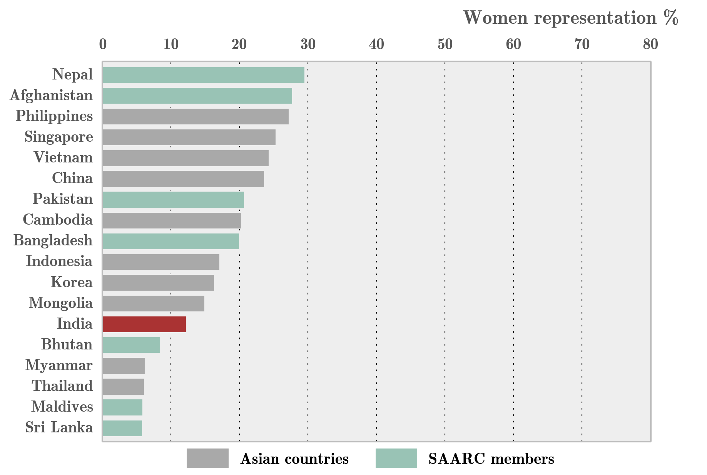
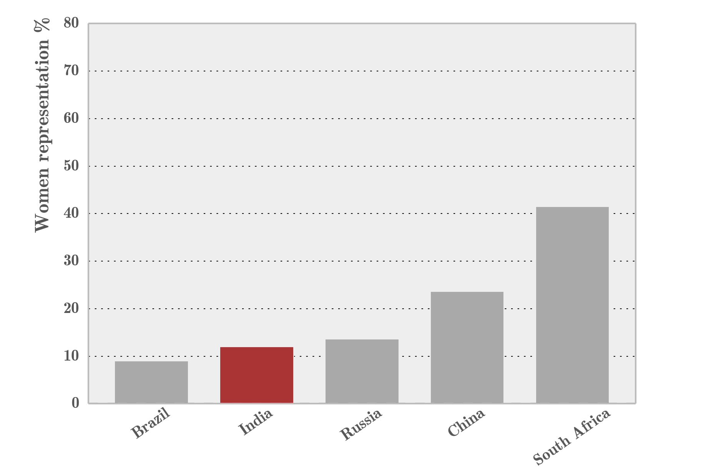
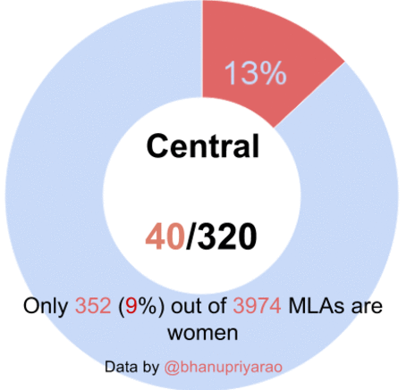
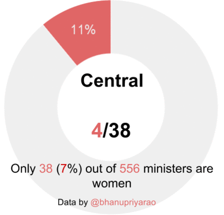
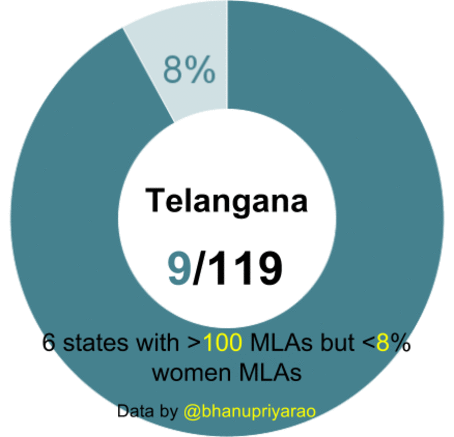

21st January - Data art
15th January - Gifts
I wrote a new post on
gifts!
13th January - Comics workshop @ Bangalore
We organized a
data comics workshop in Bangalore on 11th Jan. Grofers graciously offered venue for the event. With
64 participants attending the workshop, we had fun organizing and viewing everyone's work. Blog post soon!
3rd January - 2019 review
1st January 2020 - Break
December 2019 - Data storytelling events
Completed organizing eight monthly data storytelling events (Hackathons/Workshops) (
meetup). What started as an internal event now extends to external participants. Browse
#datastoryday or
#comicsworkshop on Twitter.
October 2019 - Blog update
January 2018 - Switching roles
After year and half of building products, he switched to creating client-facing visual solutions in late Jan 2018.
August 2016 - Gramener
Inspired by the work of
Anand, he joins
Gramener in late 2016 in the product team. Work involved contributions to Autolysis - an auto-insight generator, CRUD edits (FormHandler) for Gramex
FormHandler.
Brief postdoc
Quit postdoc at University of Wisconsin, Madison after 4 months in mid-June 2016. He was involved in understanding functional significance of relations between genes and transcription factors.
Bhanu completes Ph.D. - December 2015
Nature Scientific Reports - August 2015
Our work,
miRegulome: a knowledge-base of miRNA regulomics and analysis, is accepted in Nature Scientific Reports. To read,
visit the page.
BMC Genomics - May 2015
Our work,
DISMIRA: Prioritization of disease candidates in miRNA-disease associations based on maximum weighted matching inference model and motif-based analysis, is accepted in BMC Genomics.
Read here.
Gender in Politics - (15th April 2015)
7th March 2015


16th February 2015



North/East/Central/South/West/Northeast in first two charts represent regions in India.